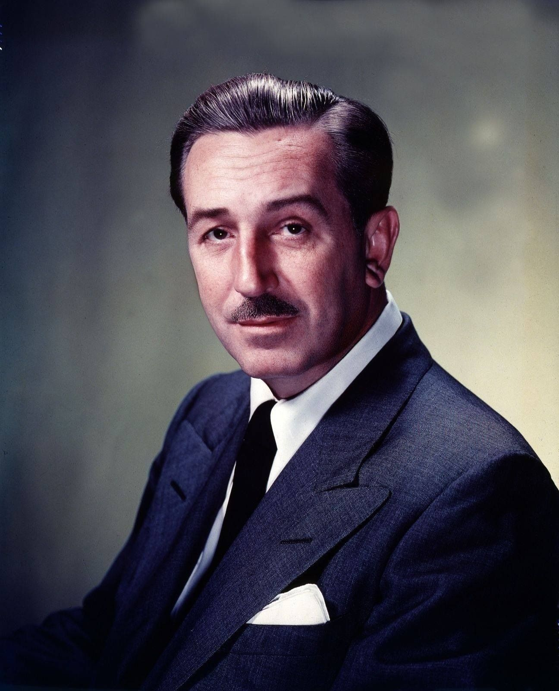

Бурное развитие анимации началось в начале 20 века. Сразу несколько человек примерно в одно время и независимо друг от друга начали работу над созданием анимационных фильмов.
Джордж Меллис случайно изобрел технику съемки, называемую «stop-motion». Суть этой техники заключалась в следующем: Мелис снимал кадр, затем менял что-то в снимаемой сцене, затем снимал следующий кадр и так далее. После чего, быстро сменяя эти кадры, добивался анимационного эффекта.
Американец Стюарт Блэктон анимировал дым в сцене в 1900 году.
Винзор МакКей создал первый анимационный мультфильм в 1906 году.
Уолт Дисней был первым, кто использовал звук в анимации. Дисней также был одним из пионером в использовании цвета в анимации. Одним из наиболее существенных нововведений студии Диснея было изобретение многоплоскостной камеры, позволявшей получать эффекты параллакса, вытянутых форм фигур, глубины и нечеткости. Его студией создано множество анимаций, персонажи которых известны по сей день (Микки Маус, Плутто, Гуффи и т.д.). Коммерческий успех первых аниматоров широкого показа создал почву для появления новых анимационных студий. Что сделал Дисней? Он рассмотрел в мультипликации глубокий коммерческий потенциал и сделал на него ставку. В 1928 году Дисней выпустил первый звуковой мультфильм «Пароходик Вилли», в котором фигурировал Микки Маус, по сей день являющийся одним из самых знаменитых мировых мультгероев. В 1931-м Уолт сделал первый цветной мультфильм «Цветы и деревья», принесший ему «Оскар», а в 1937-м состоялся релиз первой диснеевский звуковой полнометражки «Белоснежка и семь гномов», имевшей беспрецедентный финансовый успех – с нее начался «золотой век» студии, акции которой взлетели вверх ракетообразно. Кроме того, Уолт усовершенствовал технику целлулоидных перекладок и внес в процесс много других новшеств, позже принятых другими мейджорами как данность.
К 1930 году уже функционировало множество таких студий, среди которых – функционирующие по сей день Universal Pictures, Paramount, Warner Brothers и другие.
Наиболее ранние компьютерные анимации конца 60- начала 70-х годов были получены совместными усилиями исследователей в университетских лабораториях и отдельных художников.
Если взглянуть на Восток, то нельзя не отметить одного из ключевых аниматоров Японии Осаму Тэдзука: именно он, взяв за основу методы Диснея, создал уникальное направление — аниме. В числе его первых работ для телевидения числится «Астро бой»: шоу основано на одноименной манге самого Тэдзуки и является одним из первых примеров аниме в истории: многие привычные даже сегодня вещи были заложены именно Тэдзукой, которого впоследствии прозвали «богом манги».
В 1935 г. была основана киностудия «Союзмультфильм», которая первоначально называлась «Союздетмультфильм». Для мультфильмов 1945—1959 годов характерен высокий уровень реализма фонов и персонажей. В 1952 году был создан полный аналог диснеевской многоплановой камеры. Были освоены все методы классической мультипликации и изобретены новые. В 1959 г. снимается мультфильм «Влюбленное облако». Мультфильм получил широкое признание в СССР и за рубежом. Отмечен призами на зарубежных кинофестивалях. «Золотым веком» советсткой анимации принято считать 60-70-е годы XX века, когда было снято множество прекрасных мультфильмов – «Маугли», «Винни-Пух», «Ну погоди!», «Варежка» и другие. Первый компьютерный мультфильм под названием «Кошечка» создан студентами и преподавателями МГУ на БЭСМ-4, в 1968-м году.
Преобладали короткометражные мультфильмы, было снято несколько серий короткометражных мультфильмов (наиболее известные «Ну, погоди», «Винни-Пух», «Возвращение блудного попугая», «Котёнок по имени Гав», серия мультфильмов о Простоквашино), а также мультипликационный художественный киножурнал «Весёлая карусель». Широкое распространение имела кукольная анимация. Некоторое часть мультфильмов производилась в технике перекладки и технике живописи по стеклу. После распада СССР некоторое время «Союзмультфильм» продолжал оставаться крупнейшим в России производителем мультфильмов, но позднее утратил лидирующие позиции в пользу ряда частных мультипликационных студий, сохранив лишь некоторые позиции в производстве короткометражных мультфильмов.